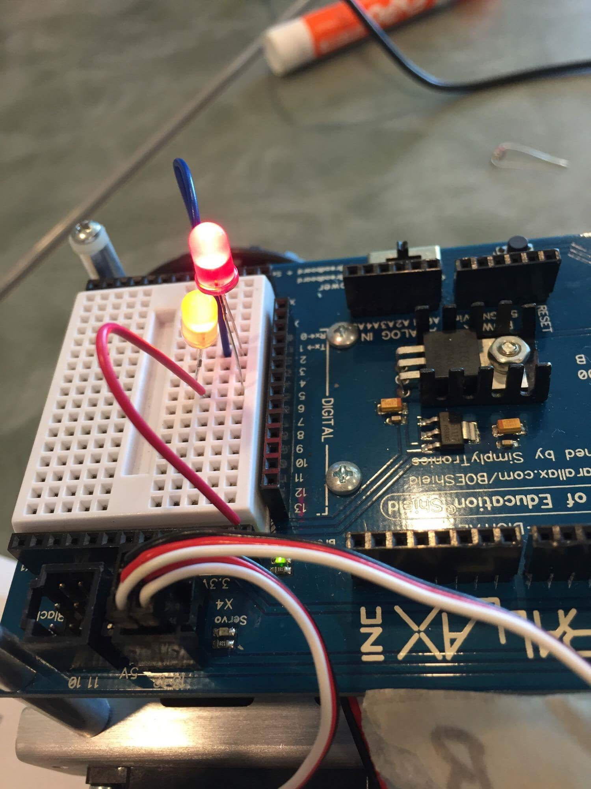

Python and Scratch are very similar in that they both have similar functions such as conditionals and variables, but while Scratch is a drag and drop block website, Python has more syntax and has to be written out.
Debugging the code was frustrating at certain points, but once we were able to solve the problem it was really satisfying.
A list is a set of mutable data values and it can be used to store multiple values. The values in a list can be called on to be used for certain functions, they can be printed, added, and told to do many other functions. Throughout the week, I worked with a few partners and I think I worked well with all of them because we were able to think of ideas together and catch each other's problems. My favorite project in python this week was adding the digits in a number. I like using loops to solve problems and storing values in variables to use later on.
I still believe that robots are necessary and useful for the progression of technology, but it is concerning that machines will be so widespread and able to replace humans. It worked well that we all were able to agree on what we wanted to do and notice each other's problems with our work to fix it. Next time, it might be better if we were able to split up everyone doing the work more evenly.